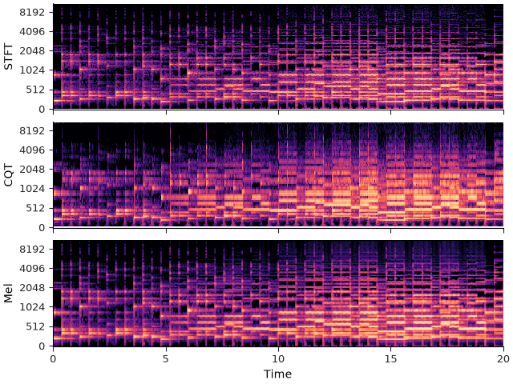
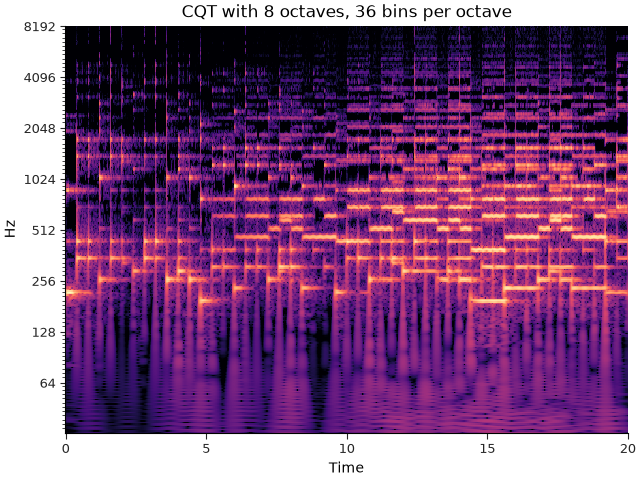
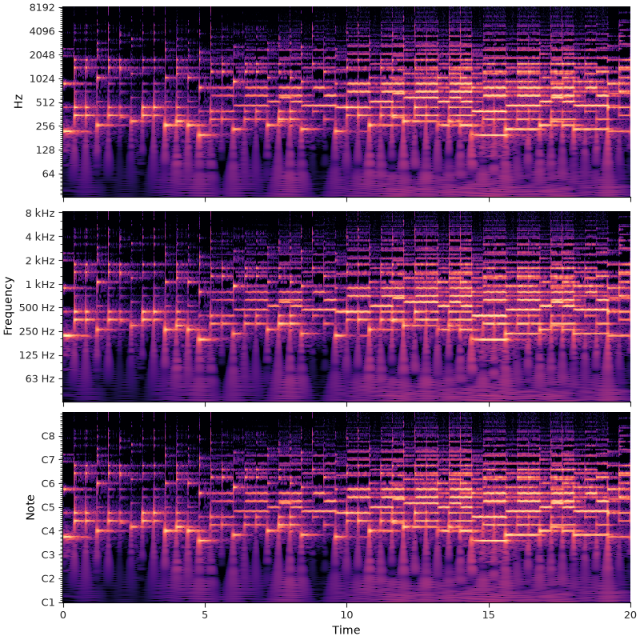
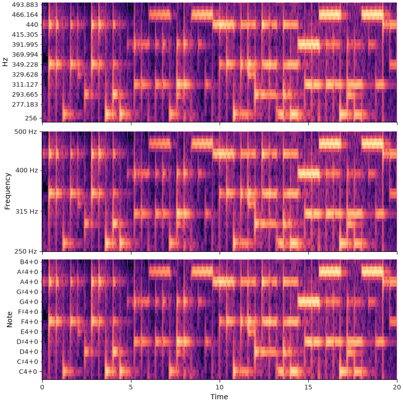

Note
Go to the end to download the full example code.
Using different frequency axes#
This section covers spectrogram displays with various spectral representations, as well as different notational systems for annotating plot axes.
Frequency ranges#
In the previous section, we introduced how to use specshow for visualizing short-time Fourier transforms (STFTs). STFTs are probably the most common starting point for spectral analysis of audio, but they aren’t the only option available.
Depending on what you want to emphasize, an STFT may not be the best display choice. CQT and mel spectrograms use different frequency scales, and specshow needs to know which one it is displaying. This is controlled by the y_axis= parameter.
Let’s see this by comparing three spectrograms on the same audio: STFT, CQT, and mel.
import matplotlib.pyplot as plt
import librosa
from IPython.display import HTML
y, sr = librosa.loadx("sweetwaltz", duration=20)
HTML(librosa.util.example_info("sweetwaltz", html=True))
# Compute an STFT
stft = librosa.stft(y)
# Compute a CQT. n_bins=None will use as many frequencies as necessary to cover
# the frequency range
cqt = librosa.cqt(y=y, sr=sr, n_bins=None)
# Compute a mel spectrogram
mel = librosa.feature.melspectrogram(y=y, sr=sr)
# And create three subplots for them
fig, ax = plt.subplots(nrows=3, sharex=True, sharey=True)
librosa.display.specshow(stft, x_axis="time", y_axis="hz", vscale="dBFS", ax=ax[0])
librosa.display.specshow(cqt, x_axis="time", y_axis="cqt_hz", vscale="dBFS", ax=ax[1])
librosa.display.specshow(mel, x_axis="time", y_axis="mel", vscale="dBFS[power]", ax=ax[2])
ax[0].set(ylabel="STFT")
ax[1].set(ylabel="CQT")
ax[2].set(ylabel="Mel")
for axi in ax.flat:
axi.label_outer()

Note
These displays use dBFS value scaling, meaning that decibels are computed relative to the largest value in the input. For STFT and CQT, the magnitudes of the output correspond to amplitude, whereas for Mel spectrograms, the output is measured by power. For proper display, we therefore need to tell vscale that the decibels are derived from power measurements rather than amplitude measurements.
The important point is that STFT and CQT are displayed in amplitude-derived dB units, while mel spectrograms are usually displayed in power-derived dB units.
Just as with STFT analyses in the previous section, we are relying here on the
default parametrizations of librosa.cqt and librosa.feature.melspectrogram.
If we deviate from these defaults, we have to inform specshow accordingly.
# Use 3 bins per semitone, and span 8 octaves
cqt = librosa.cqt(y=y, sr=sr, n_bins=8*3*12, bins_per_octave=3*12)
fig, ax = plt.subplots()
librosa.display.specshow(cqt, x_axis="time", y_axis="cqt_hz", vscale="dBFS",
sr=sr, bins_per_octave=3*12)
ax.set(title="CQT with 8 octaves, 36 bins per octave")

As a general rule, whatever parameters you set in your spectrogram computation are
likely to be relevant to the display as well. In this case, we specified n_bins and
bins_per_octave when computing the CQT.
We don’t need to specify n_bins in specshow because it can be inferred
from the shape of cqt. We do need to tell it how many bins per octave, which cannot
be inferred from the shape if the data alone.
If you’re ever in doubt about which parameters are necessary to pass to specshow,
all accepted parameters are listed in the librosa.display.specshow documentation.
Axis decoration#
So far, we have used Hz to label the frequency axis. That is a good default, but it is not always the most informative choice. For musical applications, note names or octave bands are often easier to read.
specshow provides a handful of different formats for this:
cqt_hz, frequency in Hz, with major ticks located at octaves relative to the fmin parameter,
cqt_oct3, frequency in 1/3-octave bands,
cqt_note, frequency in scientific pitch notation,
cqt_svara, frequency in either Hindustani or Carnatic notation, relative to a given Sa frequency.
The first two modes are more common in acoustics, while the latter are more common in musicology. In all cases, the underlying display units are unchanged (Hz), and only the axis decoration changes.
The following example compares Hz, oct3, and note:
fig, ax = plt.subplots(nrows=3, sharex=True, figsize=(8, 8))
librosa.display.specshow(cqt, x_axis="time", y_axis="cqt_hz", vscale="dBFS",
sr=sr, bins_per_octave=3*12, ax=ax[0])
librosa.display.specshow(cqt, x_axis="time", y_axis="cqt_oct3", vscale="dBFS",
sr=sr, bins_per_octave=3*12, ax=ax[1])
librosa.display.specshow(cqt, x_axis="time", y_axis="cqt_note", vscale="dBFS",
sr=sr, bins_per_octave=3*12, ax=ax[2])
for axi in ax.flat:
axi.label_outer()

These displays show the same underlying CQT data; only the tick labels change.
The differences become more apparent when we restrict the display to a narrower frequency range.
fig, ax = plt.subplots(nrows=3, sharex=True, figsize=(8, 8))
librosa.display.specshow(cqt, x_axis="time", y_axis="cqt_hz", vscale="dBFS",
sr=sr, bins_per_octave=3*12, ax=ax[0])
librosa.display.specshow(cqt, x_axis="time", y_axis="cqt_oct3", vscale="dBFS",
sr=sr, bins_per_octave=3*12, ax=ax[1])
librosa.display.specshow(cqt, x_axis="time", y_axis="cqt_note", vscale="dBFS",
sr=sr, bins_per_octave=3*12, ax=ax[2])
for axi in ax.flat:
axi.set(ylim=[250, 500])
axi.label_outer()

The above examples all use cqt to illustrate different tick formats, but in fact
these can be combined with many (but not all) different frequency representations:
mel_oct3, fft_note, etc.
Supported combinations are documented in librosa.display.specshow.
Summary#
specshow separates the underlying data from the way axes are labeled. The same spectrogram can therefore be annotated in Hz, note names, octave bands, or other conventions depending on the context. In practice, the most important step is to choose a y_axis= setting that matches both the representation you computed and the audience you want to communicate with.
Total running time of the script: (0 minutes 1.846 seconds)